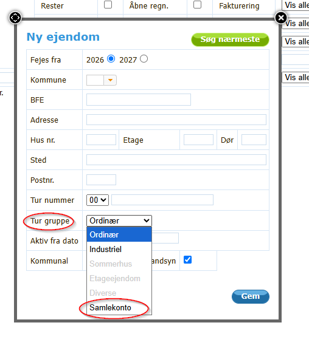
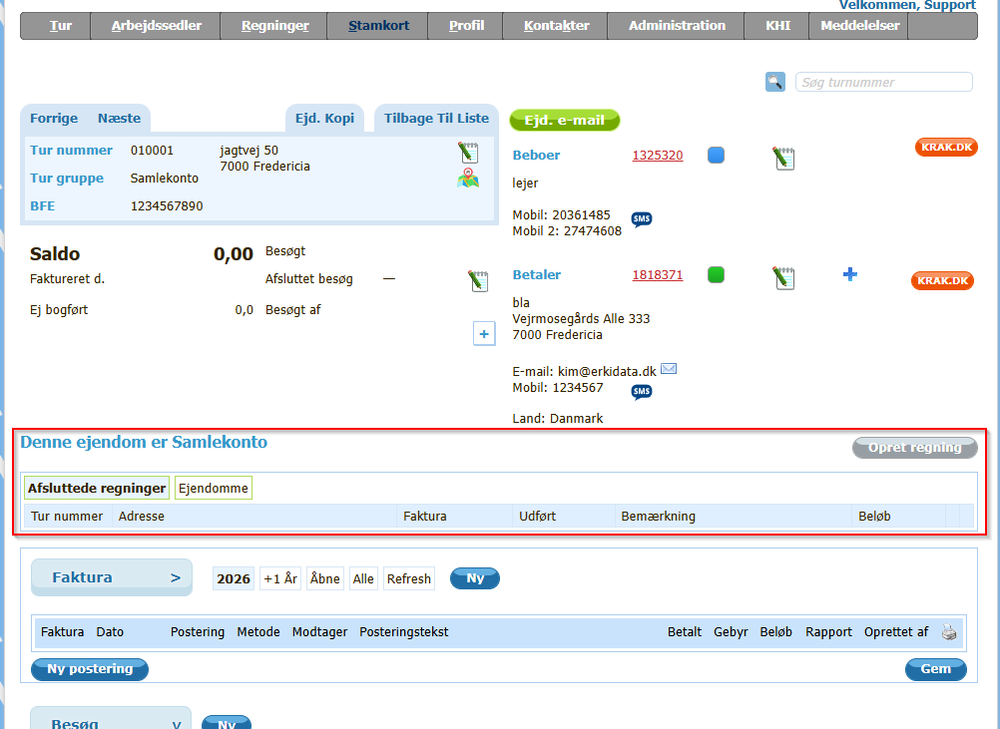
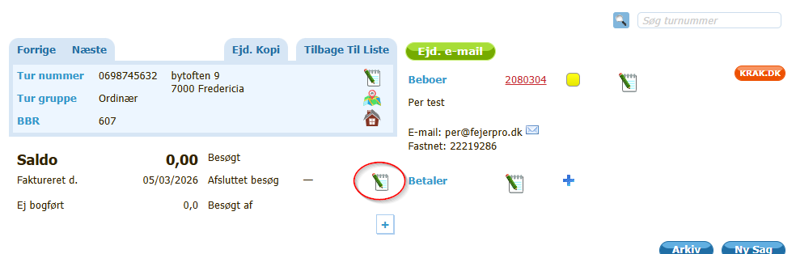
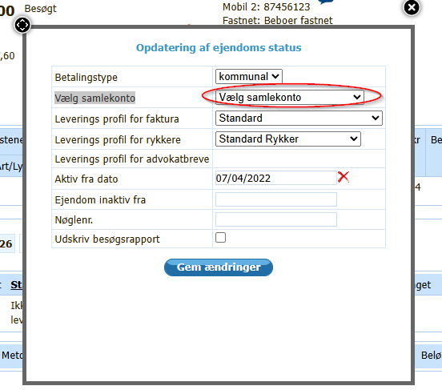
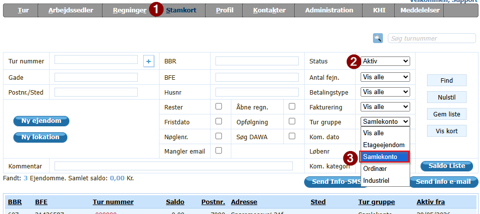
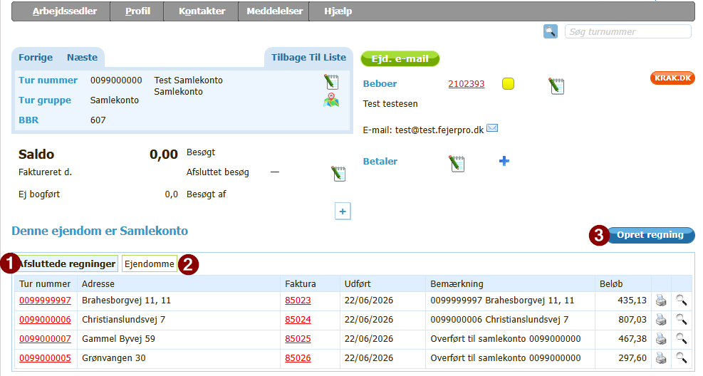
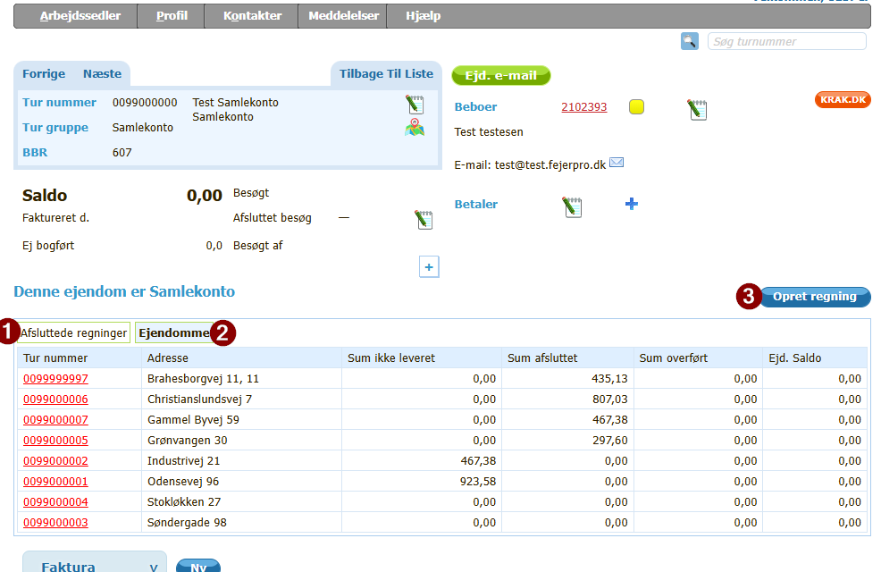
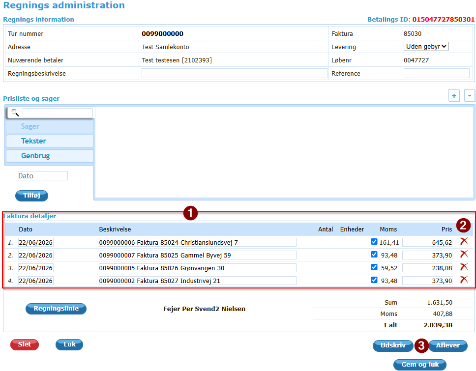

Har du flere ejendomme, som skal opkræves samlet, så kan du oprette en ejendom med turgruppe Samlekonto.
En ejendom oprettet som SamleKonto kan ikke fejes.
Det er ikke muligt at oprette sager på denne ejendom.
For de ejendomme, som så skal faktureres via denne konto, skal samlekontoen vælges under "Opdatering af ejendoms status" i feltet "Vælg samlekonto" Se Tilmeld ejendom til samlekonto
Alle brugere der kan oprette nye ejendomme
Det er kun FejerData support, der kan ændre denne indstilling. Hvis indstillingen ikke er aktiveret, kan du ikke oprette en ejendom med turgruppe "Samlekonto". Ring da til support på 9292 1256 eller skriv til e-mail: info@fejerpro.dk
En eksisterende ejendom kan ændres til Samlekonto, ved at slette alle sager på ejendommen.
Derefter er det muligt i boksen "Ejendomsinformation" under "Tur gruppe" at vælge Samlekonto.
Gå i menuen "Stamkort"
Vælg "Ny ejendom"
Udfyld oplysninger i boksen "Ny ejendom" som normalt
Vælg i "tur gruppe" Samlekonto

Tryk på "Gem"
En ejendom som er Samlekonto ser således ud

Som det ses tydeligt i det her rødt indrammede felt, så står der med store bogstaver "Denne ejendom er Samlekonto"
Herunder ses så mulighed for at se, hvilke afsluttede regninger der er overført til Samlekontoen "Afsluttede regninger" Det er også muligt at se, hvilke ejendomme der er tilknyttet denne Samlekonto, ved at vælge "Ejendomme"
Det vender jeg tilbage til senere, når vi opretter regninger til Samlekontoen
En ejendom tilmeldes en Samlekonto ved at
Gå i menuen "Stamkort"
indtast og vælg de filter oplysninger for at finde ejendommen
Vælg ejendommen
( Hvis du har søgt på turnummer eller indtastet turnummer oppe til højre, kommer du direkte ind på ejendommen)
vælg notesblokken under det blå felt med ejendomsinformationer (Se markering på billedet herunder)

I boksen der kommer op, i feltet "Vælg samlekonto" vælges den ejendom der skal bruges som samlekonto

Ind imellem kan det være godt lige at kunne se, hvilke ejendomme der er registreret som Samlekonto.
Samlekonto er en turgruppe.
På siden Stamkort (1) kan der i filteret "Tur gruppe" (3) vælges Samlekonto.
Normalt står filteret "Status" (2) på "Aktiv"
Hvis det ønskes, kan der også her vælges en anden status, f.eks. "Vis alle", hvis du vil se både aktive og ikke aktive ejendomme med Samlekonto

Når en faktura oprettes på en ejendom, der er tilmeldt en Ejendom med Samlekonto, så overføres fakturaen til Samlekontoen, når fakturaen afsluttes.
Fakturaen afleveres på samme måde som på alle andre ejendomme, hvor der laves faktura.
Når fakturaen er afsluttet, vil det kunne ses på ejendommen med Samlekontoen
Vælg ejendom med Samlekonto - se Hvordan ses det hvilke ejendomme der er Samlekonto
Når regningerne på de tilmeldte ejendomme er afsluttet, vil de kunne ses under "Afsluttede regninger"(1)

Ved at trykke på "Opret regning"(3) oprettes en regning på Samlekontoen, der indeholder de afsluttede fakturaer.
Bemærk: Ved tryk på "Opret regning" (3) bliver de listede fakturaer i "Afsluttede regninger" overført til regningen og får samtidig status "Overført"
Ved sletning af fakturaen, eller sletning af de enkelte fakturalinier ændres denne status ikke
Skal en faktura for en ejendom ikke med på regningen, er det nødvendigt først at genåbne regningen for den ejendom - der ikke ønskes skal med på regningen, for at den ikke kommer med
kontakt Support, hvis det skulle det ske, at en faktura ved en fejl er kommet med på regningen, og derfor er blevet slettet efter oprettelse af regning.

Ved tryk på "Opret regning" (3) får du fakturaen frem der bliver dannet
Den ser ud som alle andre fakturaer

Under fakturadetaljer (1) ses en regningslinie for hver afsluttet faktura for ejendomme tilmeldt Samlekontoen. Regningsliniens beskrivelse indeholder oplysninger om turnummer, fakturanummer og adresse samt totalbeløbet på fakturaen
Ud til højre (2) ses det røde slette kryds.
se Advarsel - Det er muligt at slette en regningslinie med slettekrydset
Inden fakturaen afsluttes, kan der som på alle andre fakturaer tilføjes flere regningslinier.
Når regningen er klar til levering, trykkes der på "Aflever" / "Til kontor" (3) ligesom på andre fakturaer